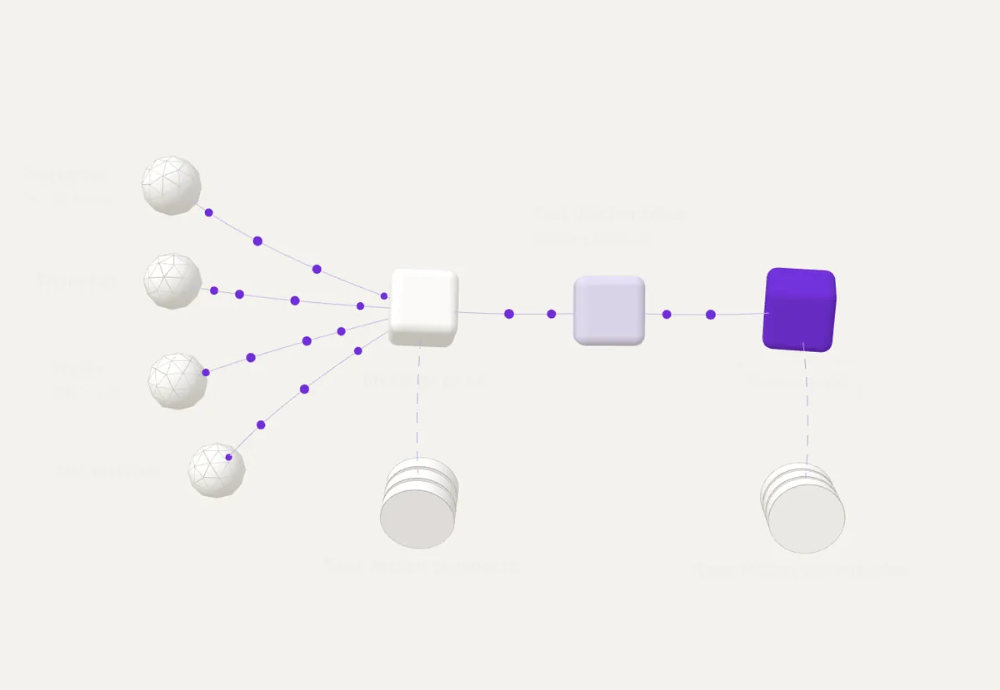

Cartographier un parcours client
Pour Paradise Parfum, en consultants : Instagram, Snapchat, site et test d’échantillon, un lien de suivi par point de contact et deux bases sous Notion.
La trace, AC34.01Caner Alpyuruk, alternant acheteur à l’Hôpital Nord Franche-Comté
BUT GACO MCMO · BC4 · Déployer le marketing omnicanal et digital · Parcours MCMO, à partir du BUT 2
Relier les canaux pour qu’un client passe de l’un à l’autre sans rupture.
Travaillé jusqu’au niveau 2, en BUT 3 : Mettre en œuvre la stratégie de marketing omnicanal et digital

Ce domaine couvre le marketing omnicanal et digital : comprendre le parcours du client, relier le magasin, le site, les réseaux sociaux et le service client, choisir les leviers digitaux et mesurer leur effet.
Les mêmes réflexes servent hors du commerce : un parcours d’usager se cartographie, un canal se mesure, et un outil digital ne vaut que s’il répond à un besoin précis.
Chaque niveau a sa page : les apprentissages critiques dans les termes du programme, la situation où je les ai travaillés, mes traces et mon bilan. Les niveaux sont ceux travaillés, aucun résultat d’évaluation n’est publié.
Quatre réalisations qui montrent ce domaine en pratique, chacune reliée à sa trace.
Pour Paradise Parfum, en consultants : Instagram, Snapchat, site et test d’échantillon, un lien de suivi par point de contact et deux bases sous Notion.
La trace, AC34.01Instagram et Snapchat en priorité, Google Ads écarté, et un budget de 150 à 300 € par mois avec des indicateurs pour chaque levier.
La trace, AC34.02Ship From Store, Click & Collect, carte de fidélité dématérialisée et outils de données chez Intersport Montbéliard, puis des préconisations.
La trace, AC24.02Au National GACO Game, 80,8 % des jeunes sportifs interrogés réservent sur Booking ou Airbnb, et la plupart ne connaissaient pas l’association.
La trace, AC24.01Les points de contact s’organisent en parcours : les flux convergent vers le message privé, le test d’échantillon puis la commande, et chaque étape est tracée dans l’une des deux bases Notion.
Les expériences où ce domaine a été travaillé en situation réelle, puis les études de cas qui le démontrent.
BUT 2 · En équipe
Deux questionnaires, un concept de communication, des offres pour les familles et les clubs, et deux plans de communication mois par mois.
BUT 2 · En trinôme
Un entretien avec le directeur, un diagnostic stratégique, un audit du magasin sur plan et des propositions pour faire vivre la surface de vente.
BUT 2 · À quatre
Des formations courtes en ligne et du coaching pour gagner en confiance en soi, du persona au plan de financement.
Explorer les autres domaines
Achats, vente et relation clientGestion de projetPilotage et performanceMarketing et international